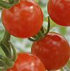
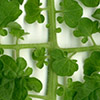

About the Moyle Lab

We study the genetics and genomics of adaptation and speciation, to understand the mechanisms that create new trait variation and new species. Using both model and non-model systems, we ask how organisms diversify, how ecological interactions shape evolutionary trajectories, and how new species arise in the face of ongoing gene flow and environmental change.

Within the broad themes of adaptation and speciation, lab members work on topics ranging from molecular mechanisms of species recognition through to the ecology and genetics of reproductive isolation, trait evolution, and diversification across wild systems.
News
- New preprint out from Hahn lab collaborators—CAGEE, a great new tool for analysis of gene expression evolution—complete with trial code and a user guide.
- Caroline passes her prelims part I! Congrats Caroline! [Nov 2022]
- Leonie’s commentary on life, the universe, and everything (but mostly Westram et al’s recent paper on reproductive isolation) comes out in Evolutionary Applications as part of an invited series.
- Transposable elements and reproductive isolation! Former labbie Dean shows that these are associated in D. virilis, now published in the Journal of Evolutionary Biology.
- Welcome to new labbie Zoe Hert! Zoe comes to us from UKY, and aims to work on genomics of diversification for her PhD. [Aug 2022]
- Caroline hosts Miru for a week of intensive research in the lab, as part of IU Biology's SSRP program for high school summer research.
- The lab goes to Evolution2022 in Cleveland OH …and has a fabulous time! [June 2022]
- Timothy passes his prelims part I! Congratulations Tim! [June 2022]
- Leonie is in the Czech Republic for the 2022 Workshop on Population and Speciation Genomics.
- Matt defends his dissertation! Congratulation Dr. Gibson! From here, Matt joins Gencove as a statistical geneticist. [May 2022]
- Brooke’s paper on mechanisms of reinforced cryptic female choice in D. pseudoobscura is out now in JEB!
- Matt and Leonie leave for field work on the Galapagos, sampling endemic and invasive wild tomatoes. [Sept 2021]
- Matt’s paper on invasion, hybridization, and fruit color convergence on the Galapagos is published in eLife!
- Flies, chemistry, and sexual isolation! Jeremy’s final dissertation chapter is now out in Evolution Letters.